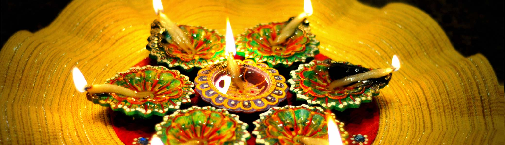

Diwali
Diwali, or Deepawali, is observed with equal fervor by Hindus all over India, and the world. The festival was celebrated for the first time when Lord Rama returned to Ayodhya from exile after 14 long years. People of Ayodhya celebrated the event by lighting lamps on the doorsteps and windowsills. Even today, small clay lamps and candles are lit during the celebration. The lights represent the victory of the good over evil. The celebrations also mark numerous cultural programs. Exchanging sweets and gifts is also a long-standing tradition of Diwali.
There is also a tradition of worshipping Goddess Lakshmi on the evening of Diwali. Though Diwali is a 5-day festival, people start preparing for it weeks before the actual festival. They clean and beautify their houses. It’s said that Goddess Lakshmi only enters houses that are clean and brightly illuminated.
The last day of Diwali marks the festival of Bhai Dooj. Bhai Dooj falls on the Shukla Paksha Dwitiya in the Hindu month of Kartik. It is known by various names in different regions of India. On this day, sisters perform aarti of their brothers and apply a ‘tilak’ on their forehead. This is followed by exchanging gifts and sweets.